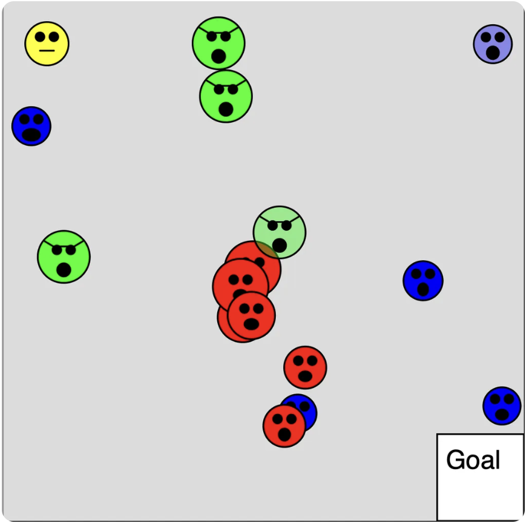

Opgave 1 - HeroMan
Indholdsfortegnelse
- Introduktion
- Start her
- Delopgave 1: HeroMans pladsering
- Delopgave 2: HeroMans størrelse
- Delopgave 3: HeroMans bevægelse
- Delopgave 4: Begrænsninger til HeroMans bevægelse
- Delopgave 5: Målområde
- Delopgave 6: Vinder betingelser
- Delopgave 7: Stop spillet hvis spillet vindes
- Delopgave 8: Genstart af nyt spil
- Delopgave 9: Grøn mand
- Delopgave 10: Interaktion med den grønne mand
- Delopgave 11: Den grønne mands bevægelse
- Delopgave 12: Den grønne mands placering
- Delopgave 13: Juster spil parametre
- Delopgave 14: Start besked
- Delopgave 15: Vinder besked
- Delopgave 16: Tab besked
- Delopgave 17: HeroMans ansigt
- Delopgave 18: Den sure grønne mands ansigt
- Delopgave 19: Flere sure grønne mænd
- Delopgave 20: Introduktion af røde mænd
- Delopgave 21: Oprettelse af AngryMan klasse
- Delopgave 22: Transparente sure mænd
- Delopgave 23: Pop-funktionalitet
- Delopgave 24: Tilretning af vinder besked
- Delopgave 25: Grå mænd
- Delopgave 26: Solbriller
- Delopgave 27: Sure blå sure mænd
- Delopgave 28: Sværhedsgradsknap
- Delopgave 29: Flere sværhedsgrader
- Delopgave 30: Tilretning af vinderbesked
- Delopgave 31: Genstart af spillet
- Delopgave 32: Beskeders pladsering
- Færdig løsning uden kommentarer
- Færdig løsning med kommentarer
Introduktion
Vi skal lave følgende spil der hedder HeroMan:
Du kan lige prøve det af så du kender funktionaliteten. Se om du kan gennemføre alle levels.
Prøv spillet her: https://editor.p5js.org/JensValdez/full/xgY-XIeXg
Når du skal lave en større opgave er det nemmest at dele den op i mindre delopgaver som du godt kan løse. For at hjælpe har jeg oprettet en masse delopgaver. Hvis du går i stå må du gerne se på løsningenseksemplet for delopgaven. Herefter skal du selv prøve at løse den. Det er fint hvis du finder dine egne løsninger til delopgaverne. Det er dog en god ide altid at se løsningseksemplet for hver delopgave igennem og forstå det efter at du har løst en delopgave.
Det er en lidt avanceret opgave som har fokus på følgende:
- Hvordan en opgave kan deles ind i mindre delopgaver som er godt at løse.
- Hvordan man kan strukturere koden i klasser, en styringsfunktion og mindre hjælpe funktioner så koden er til at overskue.
- Hvordan man kan håndtere de forskellige tilstande som spillet kan være i og styre dialogen med brugeren.
- Hvordan funktionalitet kan deles op så hjælpefunktionerne kun gør en ting.
- Hvordan man kan lave genbrugelig kode.
- Hvordan man kan bruge nedarvning (Engelsk: inheritance) og håndtere objekter der ligner hinanden på en ens måde (Det der på engelsk kaldes polymorphism)
- Hvordan man kan lave klasser og hjælpefunktioner således at de ikke gør brug af globale variabler. Dette gør at de er nemme at forstå og bruge og at de kan testes uafhængig af resten af koden.
- Hvor man kan gøre brug af tilfældighed til at gøre hver spiloplevelse unique.
- Hvordan man kan starte med at lave den mest simple version af et spil men som stadig kan spilles hvorefter man gradvist tilføjer flere og flere lækre detaljer.
Start her
Start med at forstå start kode skabelonen::
// HeroManStartKodeSkabelon
let gameState;
let heroMan;
function setup() {
createCanvas(600, 600);
setStartValues();
}
function draw() {
background(220);
showGameState();
}
function setStartValues() {
heroMan = new HeroMan();
}
function showGameState() {
heroMan.show();
}
class HeroMan {
constructor() {}
show() {
point(50, 50);
}
}
og kopier koden ind i et nyt program i p5js editoren. Giv spillet et navn og husk at gemme løbende.
Delopgave 1: HeroMans pladsering
Tilret så heroMan’s pladsering (x og y koordinat) er variabler i HeroMan klassens constructor.
Prøv løsningen til delopgaven her: https://editor.p5js.org/JensValdez/full/jGtlGKNnL
Delopgave 2: HeroMans størrelse
Tilret så heroMan har en størrelse (cirkel) og så han er gul.
Prøv løsningen til delopgaven her: https://editor.p5js.org/JensValdez/full/QIiW_dJ_j
Delopgave 3: HeroMans bevægelse
Tilret så man kan bevæge heroMan ved at bruge piletasterne.
Prøv løsningen til delopgaven her: https://editor.p5js.org/JensValdez/full/s7vJKOAAf
Delopgave 4: Begrænsninger til HeroMans bevægelse
Tilret så heroMan ikke kan bevæge sig uden for canvas, således at man hele tiden kan se hele den gule cirkel.
Prøv løsningen til delopgaven her: https://editor.p5js.org/JensValdez/full/iMRNyipiU
Delopgave 5: Målområde
Tilret så der er et målområde. Der skal ikke ske noget når heroMan kommer indenfor målområdet.
Prøv løsningen til delopgaven her: https://editor.p5js.org/JensValdez/full/jB59gNr7o
Delopgave 6: Vinder betingelser
Skriv en besked til skærmen hvis midten af heroMan er inden for målområdet.
Prøv løsningen til delopgaven her: https://editor.p5js.org/JensValdez/full/cyJcXrdd7
Delopgave 7: Stop spillet hvis spillet vindes
Tilret så spillet stopper hvis midten af heroMan er indenfor målområdet
Prøv løsningen til delopgaven her: https://editor.p5js.org/JensValdez/full/eZKveUUW2
Hint: I setup sættes gameState til “GAME-IN-PROGRESS”. Hvis heroMan kommer indenfor målområdet, så sættes gameState til “GAME-WON”. Tilret “draw” funktionen så heroMan kun bevæger sig hvis gameState er “GAME-IN-PROGRESS”.
Delopgave 8: Genstart af nyt spil
Hvis heroMan er i målområdet, så skal spillet starte forfra hvis man klikker med musen.
Prøv løsningen til delopgaven her: https://editor.p5js.org/JensValdez/full/fOsAx8Q6J
Hint: Tilføj en ny gameState der hedder “SET-START-VALUES”. Sæt denne i “setup” og når der klikkes med musen (og gameState samtig er “GAME-WON”).
Delopgave 9: Grøn mand
Tilret så der er en grøn mand (grøn cirkel uden et ansigt)
Prøv løsningen til delopgaven her: https://editor.p5js.org/JensValdez/full/ni0SyGscX
Delopgave 10: Interaktion med den grønne mand
Tilret så spillet stopper hvis heroMan rører den grønne mand.
Hint: Lave en metode i HeroMan klassen ved navn intersectsAngryMan (”Intersects” betyder at to linier krydser hinanden). Denne skal tage et angryMan object ind som argument og returnere true hvis de to cirkler rører hinanden. “validateGameState” funktionen skal sætte gameState til “GAME-LOST” hvis heroMan rører ved den grønne mand. Tilret “draw” funktionen så spille stopper hvis spillet er tabt.
Prøv løsningen til delopgaven her: https://editor.p5js.org/JensValdez/full/9Kcg2VSqH
Delopgave 11: Den grønne mands bevægelse
Tilret så den grønne mand følger efter heroMan
Prøv løsningen til delopgaven her: https://editor.p5js.org/JensValdez/full/Nou3cVy10
Delopgave 12: Den grønne mands placering
Tilret til den grønne mand fra start er pladseret et tilfældig sted på skærmen. Gør dette på en fleksibel måde således at det stadig vil virke hvis du beslutter at lave canvas større.
Prøv løsningen til delopgaven her: https://editor.p5js.org/JensValdez/full/iXqQV9yhS
Hint: Hvis man i koden skriver “width” så returneres bredten på canvas og hvis man skrive “height” så returneres højden på canvas.
Delopgave 13: Juster spil parametre
Tilret så heroMan’s hastighed er parameter i HeroMans klassen’s constructor. Tilret også så den grønne mands farve og maksimale hastighed er parametere i GreenAngryMan klassens constructor. Tilret contructoren så den grønne mand får en tilfældig højeste hastighed hver gang man starter spillet.
Prøv løsningen til delopgaven her: https://editor.p5js.org/JensValdez/full/Puxo9WIWA
Delopgave 14: Start besked
Tilret så der kommer en start besked med beskrivelse af hvad spillet går ud på når man starter spillet.
Prøv løsningen til delopgaven her: https://editor.p5js.org/JensValdez/full/m4zbD7JGK
Hint: Lav en funktion ved navn “showStartMessage”. Introducer en ny gameState ved navn “START-SCREEN” og sæt denne i “setup”. Tilret også “draw” funktionen så den kan håndtere den nye gameState. Når der klikkes med musen og gameState = “START-SCREEN”, så skal gameState sættes til “SET-START-VALUES” og når gameState er “GAME-WON” eller “GAME-LOST” så skal gameState sættes til “START-SCREEN”.
Delopgave 15: Vinder besked
Tilret så der kommer en besked med at man har vundet.
Prøv løsningen til delopgaven her: https://editor.p5js.org/JensValdez/full/3CYEf2dKy
Delopgave 16: Tab besked
Tilret så der kommer en besked når man har tabt spillet
Prøv løsningen til delopgaven her: https://editor.p5js.org/JensValdez/full/ZHAWhHINM
Delopgave 17: HeroMans ansigt
Tilret så heroMan får et ansigt.
Prøv løsningen til delopgaven her: https://editor.p5js.org/JensValdez/full/W35hCRabZ
Delopgave 18: Den sure grønne mands ansigt
Tilret så den sure grønne mand får et ansigt. Han må gerne se lidt sur eller farlig ud
Prøv løsningen til delopgaven her: https://editor.p5js.org/JensValdez/full/ZDTthADQP
Delopgave 19: Flere sure grønne mænd
Tilret så der kommer flere sure grønne mænd.
Hint: Alle de stedet hvor angryMan objektet håndteres, der skal man i stedet håndtere et array af sure mænd.
Prøv løsningen til delopgaven her: https://editor.p5js.org/JensValdez/full/AJbeL453i
Delopgave 20: Introduktion af røde mænd
Tilret så der også kommer sure røde mænd. De skal stå stille og langsomt bevæge sig større.
Prøv løsningen til delopgaven her: https://editor.p5js.org/JensValdez/full/4T_UDdM3f
Delopgave 21: Oprettelse af AngryMan klasse
Lav en ny klasse ved navn AngryMan som GreenAngryMan og RedAngryMan klassen nedarver fra. Den skal indehold de variabler og metoder som er fælles for de to eksisterende klasser. AngryMan klassens constructor skal tage “colour” som parameter.
Prøv løsningen til delopgaven her: https://editor.p5js.org/JensValdez/full/cge0Hv2WQS
Delopgave 22: Transparente sure mænd
Tilret så der hele tiden er to transparente sure mænd. Man skal stadig tabe spillet hvis man rører dem.
Hint: Lav en variabel i AngryMan klassens constructor ved navn “colourAlpha” (Alpha betyder gennemsigtighed) samt en ny metode ved navn “turnTransparent” som sætter “colourAlpha” variablen til 100. I “updateGameState” funktionen skal “turnTransparent” metoden kaldes for de to første sure mænd der løbes igennem i for løkken. Det er lidt tricky at få det til at virke helt så de sure mænd vises med korrekt farve og alpha. Du må gerne smugkikke på løsningseksemplet.
Prøv løsningen til delopgaven her: https://editor.p5js.org/JensValdez/full/mLEmUPg4R
Delopgave 23: Pop-funktionalitet
Tilret så de transparente sure mænd forsvinder hvis heroMan rører dem. Der skal hele tiden være to transparente sure mænd.
Hint: Lav en ny metode i AngryMan klassen ved navn “canPop”. Denne skal returnere true hvis den sure mand er gennemsigtig. Tilret “validateGameState” funktionen til at gøre følgende: Hvis heroMan rører den sur mand og den sure mand kan pop’e, så skal den sure mand fjernes fra arrayet med det sure mænd. Hvis den sure mand ikke kan pop’e, så er spillet tabt.
Prøv løsningen til delopgaven her: https://editor.p5js.org/JensValdez/full/CrF33AMvz
Delopgave 24: Tilretning af vinder besked
Tilret beskeden der kommer når man vinder spillet nævner hvor mange sure mænd man har pop’et
Hint: Lad heroMan holde styr på hvor mange sure mænd han har pop’et og tæl denne op i “validateGameState” funktionen.
Prøv løsningen til delopgaven her: https://editor.p5js.org/JensValdez/full/l8AN85fVt
Delopgave 25: Grå mænd
Hvis heroMan og en sur mand rører hinanden, så skal de begge farves grå
Prøv løsningen til delopgaven her: https://editor.p5js.org/JensValdez/full/PQvfzAQMs
Delopgave 26: Solbriller
Tilret så den sure grønne mand får solbriller. Dette kan gøres ved at lave en “show” metode i GreenAngryMan klassen (som overskriver den fra AngryMan klassen).
Prøv løsningen til delopgaven her: https://editor.p5js.org/JensValdez/full/nF3SnGZ3W
Delopgave 27: Sure blå sure mænd
Tilret så der også kommer blå sure mænd. De skal bevæge sig som billard kugler.
Prøv løsningen til delopgaven her: https://editor.p5js.org/JensValdez/full/zP1rgQT6Q
Delopgave 28: Sværhedsgradsknap
Tilret så man på start skærmen skal trykke på en knap ved navn “EASY” for at starte spillet. Lav knappen som en klasse ved navn Button der kan genbruges til forskellige knap objekter.
Hint: Giv Button klassen en metode ved navn “isClicked”.
Prøv løsningen til delopgaven her: https://editor.p5js.org/JensValdez/full/akXqd0rap
Delopgave 29: Flere sværhedsgrader
Tilret så der også er knapper for level “NORMAL”, “HARD” og “EXTREME”. Lav en ny globel variabel ved navn “gameLevel” som sættes når man trykker på knapperne. I “setStartValues” skal man sætte forskellige start værdier afhængig af hvilken level spillet er startet på.
Hint: Tilføj knapper for de forskellige levels under start beskeden. Tilføj en ny global variabel ved navn “gameLevel” således at denne sættes til hhv. “EASY”, “NOTMAL”, “HARD” og “EXTREME” når man starter spillet på de forskellige levels. Tilret “setStartValues” så start værdierne sættes afhængig af game level.
Prøv løsningen til delopgaven her: https://editor.p5js.org/JensValdez/full/nAFM3C3HS
Delopgave 30: Tilretning af vinderbesked
Tilret vinder beskeden så der står hvilket level man har vundet på.
Hint: Giv “Button” klassen en ny variabel i constructoren ved navn “wasClicked” samt en metode ved navn “getWasClicked” der returnerer true hvis der er blevet klikket på knappen. I “showGameWonMessage” funktionen kan man herved lave en differentieret tekst afhængig af hvilken knap spillet er startet med.
Prøv løsningen til delopgaven her: https://editor.p5js.org/JensValdez/full/-BkB4Bpt1
Delopgave 31: Genstart af spillet
Under beskeden der kommer når man har vundet eller tabt skal der være en knap man skal trykke på for at starte spillet igen.
Prøv løsningen til delopgaven her: https://editor.p5js.org/JensValdez/full/fkmc4f7dS
Delopgave 32: Beskeders pladsering
Hvis heroMan er på den øverste halvdel af canvas når man taber spillet, så skal beskeden med at man har tabe vises på den nederste halvdel af canvas og omvendt.
Prøv løsningen til delopgaven her: https://editor.p5js.org/JensValdez/full/xgY-XIeXg
Færdig løsning uden kommentarer:
Færdig løsning med kommentarer:
Task 1 - HeroMan
Table of Contents
- Introduction
- Start here
- Subtask 1: HeroMan's position
- Subtask 2: HeroMan's size
- Subtask 3: HeroMan's movement
- Subtask 4: Restrictions on HeroMan's movement
- Subtask 5: Goal area
- Subtask 6: Winning conditions
- Subtask 7: Stop the game if the game is won
- Subtask 8: Restart new game
- Subtask 9: Green man
- Subtask 10: Interaction with the green man
- Subtask 11: The green man's movement
- Subtask 12: The green man's location
- Subtask 13: Adjust game parameters
- Subtask 14: Start message
- Subtask 15: Winner message
- Subtask 16: Loser message
- Subtask 17: HeroMan's face
- Subtask 18: The angry green man's face
- Subtask 19: More angry green men
- Subtask 20: Introduction of red men
- Subtask 21: Creation of AngryMan class
- Subtask 22: Transparent angry men
- Subtask 23: Pop functionality
- Subtask 24: Adjustment of winner message
- Subtask 25: Gray men
- Subtask 26: Sunglasses
- Subtask 27: Angry blue angry men
- Subtask 28: Difficulty button
- Subtask 29: More difficulty levels
- Subtask 30: Adjustment of winner message
- Subtask 31: Restarting the game
- Subtask 32: Placement of messages
- Finished solution without comments
- Finished solution with comments
Introduction
We are going to make the following game called HeroMan:
You can try it out so you know the functionality. See if you can complete all levels.
Try the game here: https://editor.p5js.org/JensValdez/full/xgY-XIeXg
When you have to do a larger task, it is easiest to divide it into smaller subtasks that you can solve. To help, I have created a lot of subtasks. If you get stuck, you are welcome to look at the solution example for the subtask. After that, you should try to solve it yourself. It's fine if you find your own solutions to the subtasks. However, it is a good idea to always look through the solution example for each delopgave igennem and forstå det efter at du har løst en delopgave.
This is a slightly advanced task that focuses on the following:
- How a task can be divided into smaller subtasks that are good to solve.
- How to structure the code in classes, a control function and smaller helper functions so that the code is easy to manage.
- How to handle the different states the game can be in and control the dialogue with the user.
- How functionality can be divided so that the helper functions only do one thing.
- How to create reusable code.
- How to use inheritance and handle objects that are similar to each other in a uniform way (what is called polymorphism in English)
- How to create classes and helper functions so that they do not use global variables. This makes them easy to understand and use and they can be tested independently of the rest of the code.
- Where you can use randomness to make each game experience unique.
- How to start by making the simplest version of a game that can still be played, after which you gradually add more and more nice details.
Start here
Start by understanding the starting code template:
// HeroManStartCodeTemplate
let gameState;
let heroMan;
function setup() {
createCanvas(600, 600);
setStartValues();
}
function draw() {
background(220);
showGameState();
}
function setStartValues() {
heroMan = new HeroMan();
}
function showGameState() {
heroMan.show();
}
class HeroMan {
constructor() {}
show() {
point(50, 50);
}
}
and copy the code into a new program in the p5js editor. Give the game a name and remember to save regularly.
Subtask 1: HeroMan's position
Adjust so that heroMan's position (x and y coordinates) are variables in the HeroMan class's constructor.
Try the solution to the subtask here: https://editor.p5js.org/JensValdez/full/jGtlGKNnL
Subtask 2: HeroMan's size
Adjust so that heroMan has a size (circle) and is yellow.
Try the solution to the subtask here: https://editor.p5js.org/JensValdez/full/QIiW_dJ_j
Subtask 3: HeroMan's movement
Adjust so that you can move heroMan using the arrow keys.
Try the solution to the subtask here: https://editor.p5js.org/JensValdez/full/s7vJKOAAf
Subtask 4: Restrictions on HeroMan's movement
Adjust so that heroMan cannot move outside the canvas, so that you can always see the entire yellow circle.
Try the solution to the subtask here: https://editor.p5js.org/JensValdez/full/iMRNyipiU
Subtask 5: Goal area
Adjust so that there is a goal area. Nothing should happen when heroMan enters the goal area.
Try the solution to the subtask here: https://editor.p5js.org/JensValdez/full/jB59gNr7o
Subtask 6: Winning conditions
Write a message to the screen if the center of heroMan is within the goal area.
Try the solution to the subtask here: https://editor.p5js.org/JensValdez/full/cyJcXrdd7
Subtask 7: Stop the game if the game is won
Adjust so that the game stops if the center of heroMan is within the goal area
Try the solution to the subtask here: https://editor.p5js.org/JensValdez/full/eZKveUUW2
Hint: In setup, gameState is set to “GAME-IN-PROGRESS”. If heroMan enters the goal area, gameState is set to “GAME-WON”. Adjust the “draw” function so that heroMan only moves if gameState is “GAME-IN-PROGRESS”.
Subtask 8: Restart new game
If heroMan is in the goal area, the game should restart if you click the mouse.
Try the solution to the subtask here: https://editor.p5js.org/JensValdez/full/fOsAx8Q6J
Hint: Add a new gameState called “SET-START-VALUES”. Set this in “setup” and when the mouse is clicked (and gameState is also “GAME-WON”).
Subtask 9: Green man
Adjust so that there is a green man (green circle without a face)
Try the solution to the subtask here: https://editor.p5js.org/JensValdez/full/ni0SyGscX
Subtask 10: Interaction with the green man
Adjust so that the game stops if heroMan touches the green man.
Hint: Create a method in the HeroMan class called intersectsAngryMan. This should take an angryMan object as an argument and return true if the two circles touch. The “validateGameState” function should set gameState to “GAME-LOST” if heroMan touches the green man. Adjust the “draw” function so that the game stops if the game is lost.
Try the solution to the subtask here: https://editor.p5js.org/JensValdez/full/9Kcg2VSqH
Subtask 11: The green man's movement
Adjust so that the green man follows heroMan
Try the solution to the subtask here: https://editor.p5js.org/JensValdez/full/Nou3cVy10
Subtask 12: The green man's location
Adjust so that the green man is placed in a random place on the screen from the start. Do this in a flexible way so that it will still work if you decide to make the canvas larger.
Try the solution to the subtask here: https://editor.p5js.org/JensValdez/full/iXqQV9yhS
Hint: If you write “width” in the code, the width of the canvas is returned, and if you write “height”, the height of the canvas is returned.
Subtask 13: Adjust game parameters
Adjust so that heroMan's speed is a parameter in the HeroMan class's constructor. Also adjust so that the green man's color and maximum speed are parameters in the GreenAngryMan class's constructor. Adjust the constructor so that the green man gets a random maximum speed every time you start the game.
Try the solution to the subtask here: https://editor.p5js.org/JensValdez/full/Puxo9WIWA
Subtask 14: Start message
Adjust so that a start message appears with a description of what the game is about when you start the game.
Try the solution to the subtask here: https://editor.p5js.org/JensValdez/full/m4zbD7JGK
Hint: Create a function called “showStartMessage”. Introduce a new gameState called “START-SCREEN” and set it in “setup”. Also adjust the “draw” function so that it can handle the new gameState. When the mouse is clicked and gameState = “START-SCREEN”, gameState should be set to “SET-START-VALUES” and when gameState is “GAME-WON” or “GAME-LOST”, gameState should be set to “START-SCREEN”.
Subtask 15: Winner message
Adjust so that a message appears saying that you have won.
Try the solution to the subtask here: https://editor.p5js.org/JensValdez/full/3CYEf2dKy
Subtask 16: Loser message
Adjust so that a message appears when you have lost the game
Try the solution to the subtask here: https://editor.p5js.org/JensValdez/full/ZHAWhHINM
Subtask 17: HeroMan's face
Adjust so that heroMan gets a face.
Try the solution to the subtask here: https://editor.p5js.org/JensValdez/full/W35hCRabZ
Subtask 18: The angry green man's face
Adjust so that the angry green man gets a face. He can look a little angry or dangerous
Try the solution to the subtask here: https://editor.p5js.org/JensValdez/full/ZDTthADQP
Subtask 19: More angry green men
Adjust so that more angry green men appear.
Hint: In all the places where the angryMan object is handled, you should instead handle an array of angry men.
Try the solution to the subtask here: https://editor.p5js.org/JensValdez/full/AJbeL453i
Subtask 20: Introduction of red men
Adjust so that angry red men also appear. They should stand still and slowly grow larger.
Try the solution to the subtask here: https://editor.p5js.org/JensValdez/full/4T_UDdM3f
Subtask 21: Creation of AngryMan class
Create a new class called AngryMan from which the GreenAngryMan and RedAngryMan classes inherit. It should contain the variables and methods that are common to the two existing classes. The AngryMan class's constructor should take “colour” as a parameter.
Try the solution to the subtask here: https://editor.p5js.org/JensValdez/full/cge0Hv2WQS
Subtask 22: Transparent angry men
Adjust so that there are always two transparent angry men. You should still lose the game if you touch them.
Hint: Create a variable in the AngryMan class's constructor called “colourAlpha” (Alpha means transparency) and a new method called “turnTransparent” that sets the “colourAlpha” variable to 100. In the “updateGameState” function, the “turnTransparent” method should be called for the first two angry men that are looped through in the for loop. It's a bit tricky to get it to work completely so that the angry men are displayed with the correct color and alpha. You are welcome to peek at the solution example.
Try the solution to the subtask here: https://editor.p5js.org/JensValdez/full/mLEmUPg4R
Subtask 23: Pop functionality
Adjust so that the transparent angry men disappear if heroMan touches them. There should always be two transparent angry men.
Hint: Create a new method in the AngryMan class called “canPop”. This should return true if the angry man is transparent. Adjust the “validateGameState” function to do the following: If heroMan touches the angry man and the angry man can pop, the angry man should be removed from the array of angry men. If the angry man cannot pop, the game is lost.
Try the solution to the subtask here: https://editor.p5js.org/JensValdez/full/CrF33AMvz
Subtask 24: Adjustment of winner message
Adjust the message that appears when you win the game to mention how many angry men you have popped
Hint: Let heroMan keep track of how many angry men he has popped and increment this in the “validateGameState” function.
Try the solution to the subtask here: https://editor.p5js.org/JensValdez/full/l8AN85fVt
Subtask 25: Gray men
If heroMan and an angry man touch each other, they should both be colored gray
Try the solution to the subtask here: https://editor.p5js.org/JensValdez/full/PQvfzAQMs
Subtask 26: Sunglasses
Adjust so that the angry green man gets sunglasses. This can be done by creating a “show” method in the GreenAngryMan class (which overrides the one from the AngryMan class).
Try the solution to the subtask here: https://editor.p5js.org/JensValdez/full/nF3SnGZ3W
Subtask 27: Angry blue angry men
Adjust so that angry blue men also appear. They should move like billiard balls.
Try the solution to the subtask here: https://editor.p5js.org/JensValdez/full/zP1rgQT6Q
Subtask 28: Difficulty button
Adjust so that on the start screen you have to press a button called “EASY” to start the game. Create the button as a class called Button that can be reused for different button objects.
Hint: Give the Button class a method called “isClicked”.
Try the solution to the subtask here: https://editor.p5js.org/JensValdez/full/akXqd0rap
Subtask 29: More difficulty levels
Adjust so that there are also buttons for levels “NORMAL”, “HARD” and “EXTREME”. Create a new global variable called “gameLevel” which is set when you press the buttons. In “setStartValues” you should set different start values depending on which level the game is started on.
Hint: Add buttons for the different levels under the start message. Add a new global variable called “gameLevel” so that it is set to “EASY”, “NORMAL”, “HARD” and “EXTREME” respectively when you start the game on the different levels. Adjust “setStartValues” so that the start values are set depending on the game level.
Try the solution to the subtask here: https://editor.p5js.org/JensValdez/full/nAFM3C3HS
Subtask 30: Adjustment of winner message
Adjust the winner message so that it says which level you have won on.
Hint: Give the “Button” class a new variable in the constructor called “wasClicked” and a method called “getWasClicked” that returns true if the button has been clicked. In the “showGameWonMessage” function, you can then create a differentiated text depending on which button the game was started with.
Try the solution to the subtask here: https://editor.p5js.org/JensValdez/full/-BkB4Bpt1
Subtask 31: Restarting the game
Under the message that appears when you have won or lost, there should be a button you have to press to start the game again.
Try the solution to the subtask here: https://editor.p5js.org/JensValdez/full/fkmc4f7dS
Subtask 32: Placement of messages
If heroMan is on the upper half of the canvas when you lose the game, the message that you have lost should be displayed on the lower half of the canvas and vice versa.
Try the solution to the subtask here: https://editor.p5js.org/JensValdez/full/xgY-XIeXg